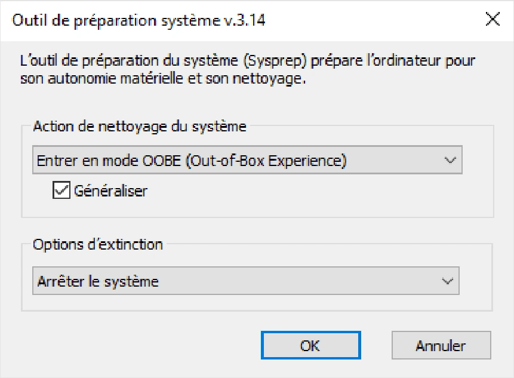

Transcription du document du dossier TSSR, adaptée à une lecture Web. Les compléments pédagogiques figurent dans leur onglet distinct.
Systèmes clients Microsoft — Module 12.
sysprep.Pour rendre les postes uniques dans l’entreprise :
En ligne de commande :
C:\Windows\System32\sysprep\sysprep.exe /oobe /generalize /shutdown
En complément :
C:\Windows\System32\Sysprep, fichiers TXT et EVT.
/PersistAllDeviceInstalls en ligne de commande.Une fois le système de référence éteint : ne pas le redémarrer avant d’avoir capturé l’image du système !
dism, présent dans WinPE et dans Windows.diskpart, mount, drvload, net use, Powershel, etc.| Mode | Démarche |
|---|---|
| Automatisé grâce au serveur de déploiement | Déploiement en masse ; démarrer les postes sur le réseau (Boot PXE) ; les clients requêtent puis se connectent au serveur de déploiement, ici WDS ; choix de l’image à déployer. |
| Manuel grâce à dism | Déploiement au cas par cas ; démarrer les postes sur le support amorçable WinPE ; partitionnement du stockage d’accueil. |